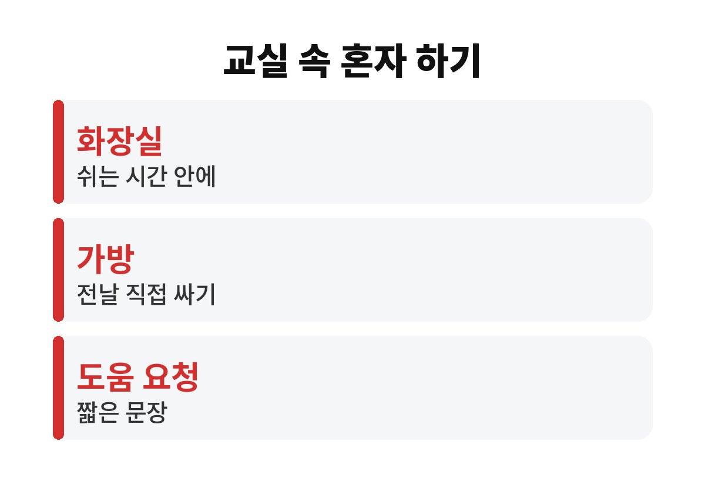
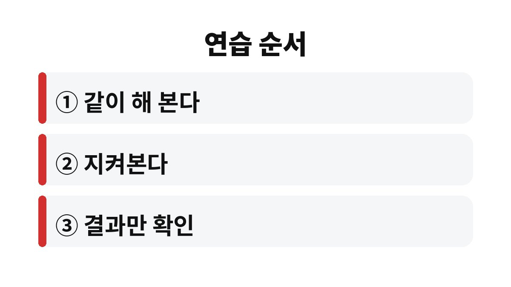

초등 입학 준비 생활 습관은 글자나 숫자 공부보다 화장실, 도시락, 가방 정리처럼 교실에서 혼자 해야 하는 일을 미리 해 보는 쪽이 먼저다.
입학 직후 아이가 힘들어하는 장면은 대개 공부가 아니라 쉬는 시간 10분 안에 해결해야 하는 사소한 일에서 나온다.
겨울방학은 그 연습을 부담 없이 해 볼 수 있는 시간이다.
유치원이나 어린이집에서는 선생님이 옆에서 챙겨 주는 일이 많았다.
초등학교에서는 수업 시간 40분 단위로 움직이고, 쉬는 시간에 화장실과 물 마시기, 다음 수업 준비를 스스로 끝내야 한다.
아이 입장에서는 갑자기 할 일이 늘어난 셈이다.
부모 눈에는 10분이 넉넉해 보여도 아이에게는 화장실 줄을 서고 손을 씻고 자리로 돌아오면 끝나는 시간이다.
그래서 화장실을 참다가 수업 중에 말을 못 꺼내는 일이 생긴다.
수업이 끝나는 종이 울리면 아이들이 한꺼번에 복도로 나온다.
화장실 앞에 줄이 늘어서고, 그 사이 자리에 둔 가방 속 준비물을 찾지 못해 허둥대는 아이도 생긴다.
이런 상황에서 부모가 옆에 없다는 사실이 아이에게는 생각보다 크게 다가온다.
미리 해 본 일이 있으면 같은 장면에서도 당황하는 시간이 짧아진다.
| 학교 장면 | 아이가 막히는 지점 | 집에서 해 볼 연습 |
|---|---|---|
| 화장실 | 문 잠그기, 뒤처리, 손 씻기 | 혼자 다녀오게 하고 부모는 문밖에서 기다린다 |
| 급식·간식 | 수저 쓰기, 남은 음식 정리 | 식사 후 식판 대신 그릇을 직접 싱크대에 둔다 |
| 가방 정리 | 알림장과 준비물 챙기기 | 전날 밤 가방을 아이가 직접 싼다 |
| 도움 요청 | 모르는 것을 말하지 못함 | 문장 하나를 정해 소리 내어 연습한다 |
표의 연습은 한 번에 다 하지 않아도 된다.
아이가 가장 어려워하는 한 가지를 골라 일주일씩 이어 가면 부담이 적다.
부모가 준비물을 대신 챙겨 주던 습관이 있는 집일수록 가방 싸기부터 시작하는 편이 쉽다.
처음 일주일은 빠뜨린 것이 있어도 그대로 두고 아침에 아이가 직접 알아채게 한다.

처음에는 같이 하고, 며칠 뒤에는 지켜보고, 그다음에는 결과만 확인한다.
아이가 서툴게 해도 바로 고쳐 주지 않는 것이 연습의 전부다.
나는 신발 끈 매기를 곁에서 고쳐 주다가 아이가 아예 손을 놓아 버린 적이 있어서 그 뒤로는 끝까지 기다린다.
아날로그 시계를 읽지 못해도 괜찮다.
대신 긴바늘이 어디까지 오면 쉬는 시간이 끝나는지 그림으로 그려 보면 감이 잡힌다.
선생님께 말하는 문장도 미리 정해 둔다.
배가 아파요, 화장실에 가고 싶어요처럼 짧고 분명한 말이면 충분하다.

연습 중에 아이가 실수해도 괜찮다고 먼저 말해 둔다.
도시락 뚜껑이 안 열려 다시 부탁해도 그것은 실패가 아니라 도움을 요청하는 연습이다.
이런 경험이 쌓이면 교실에서도 손을 들 용기가 생긴다.
한글 쓰기를 완벽하게 끝내거나 덧셈 문제집을 몇 권 푸는 일은 서두를 필요가 없다.
집에서 책상에 오래 앉히는 연습도 입학 전에 억지로 늘리지 않아도 된다.
10분 정도 그림을 그리거나 책을 보며 앉아 있는 정도면 충분하다.
입학 후 학교에서 처음부터 가르친다.
다만 자기 이름을 쓰고 읽는 정도는 해 두면 이름표와 알림장에서 덜 당황한다.
아이마다 속도가 달라서 친구가 다 한다고 해서 우리 아이도 지금 해야 하는 것은 아니다.
공식 안내가 정한 학교별 예비소집이나 입학 일정은 우리 집 취학통지서와 학교 안내문에서 확인한다.
이번 주에는 화장실 한 가지만 혼자 하게 해 보면 된다.
아이가 눈에 띄게 불안해하거나 친구 관계, 학습, 발달이 걱정되면 입학 전에 소아청소년과나 학교 상담 창구에 물어보는 편이 빠르다.
※ 2026년 기준 공식 자료를 바탕으로 정리한 일반 정보이며, 아이의 발달이나 건강에 걱정이 있다면 소아청소년과 등 전문가와 상담하길 바란다.